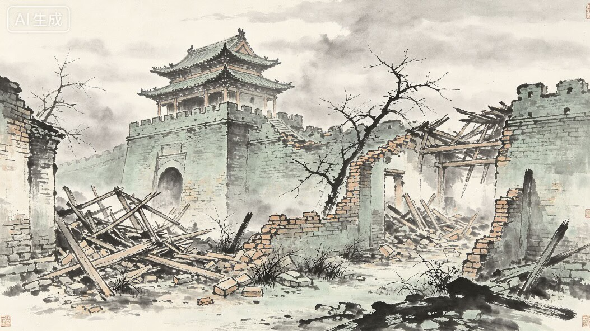
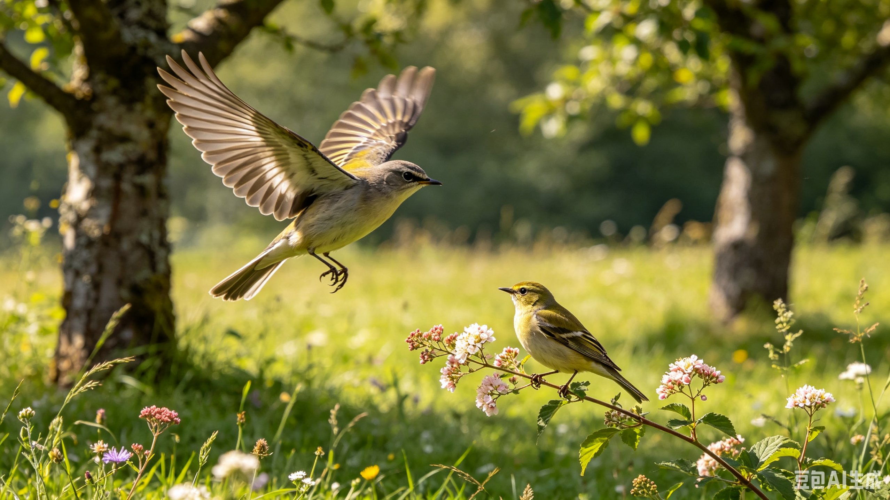
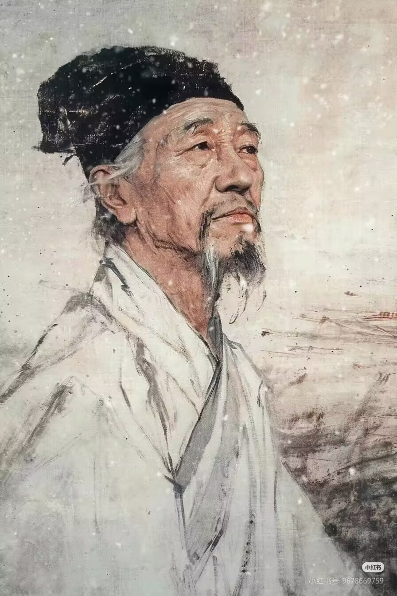

从《望岳》到《春望》
同一个“望”字，从仰望泰山之巅到俯看破碎都城，呈现诗人精神世界的位移。
会当凌绝顶，一览众山小。青年杜甫的豪情与抱负
望

国破山河在，城春草木深。中年杜甫直面现实的沉痛与悲悯
同一个“望”字，从仰望泰山之巅到俯看破碎都城，呈现诗人精神世界的位移。

先呈现学生对春天的常规认知，再反转到诗中的“破、深、溅泪、惊心”。
拖动滑块观察：自然山河稳定存在，人文秩序却从繁华走向破碎。
宫殿、坊市、街道与人群共同构成盛唐秩序；山川河流作为底层图像保持不变。
只使用同一张标准花鸟图。点击关键词，图像缓慢变化，呈现“心境滤镜”。

花鸟本身没有泪，也没有惊；变化来自观看者的心境。
拖动滑杆对比杜甫中年形象与衰老状态，追问：什么被时代消耗了？

你看到什么被“偷”走了？生命力、健康、时间，怎样从一张脸落到“白头搔更短”的诗句里？
宏大的战乱最后压到一个具体的人身上，这就是个人与时代的断裂。
《春望》是杜甫精神世界的关键转折：个人抱负转向家国天下。
安史之乱爆发。盛世秩序开始塌陷，杜甫的诗歌视野被迫转向历史灾难。